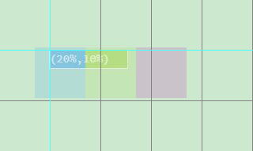

background-position:[x偏移] [y偏移];
(0,0)位于容器的左上角
x>0，背景左移
x<0,背景右移
y>0,背景上移
y<0，背景下移
百分比取反。
x:(600-192)*(-1)*10%=-40.8
y:(400-64)*(-1)*20%=-67.2
background-position:-40.8px -67.2px;

x:(100-192)*(-1)*20%=18.4
y:(24-64)*(-1)*10%=4
background-position:18.4px 4px;